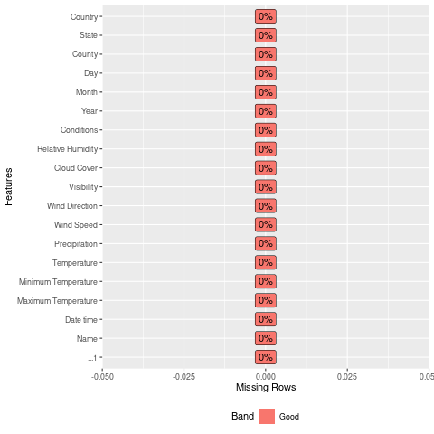

Weather Conditions in Southern California From Different Level of Risks
california
analysis
wildfire
Author
Lulus Adhitya
Published
September 20, 2022
Abstract
Summary of Weather Comparison Between Low and High Risks Season of Wildfire in Southern California using data 2010-2020[updated: 20 Sept 2022]
Data Preparation
We are using Weather Dataset on 2010 -2020 that are already being cleaned on previous process.See for Reference. And then we catogorized the data into 3 level of Risk: High,Medium and Low for comparison purpose, see for Reference. We do comparison between Low and High level of risk for the clarity of the differentiation.
Show the code
import rpy2.robjects as robjects%load_ext rpy2.ipythonimport pandas as pdimport numpy as npimport matplotlib.pyplot as pltimport seaborn as snsimport geopandas as gpdimport foliumfrom matplotlib.pyplot import figurefrom tabulate import tabulate# plt.style.use('ggplot')%matplotlib inlineimport warningswarnings.filterwarnings('ignore')%R require(tidyverse)%R require(DataExplorer)%R require(readxl)%R require(esquisse)%R options(warn=-1)
R[write to console]: Loading required package: tidyverse
── Column specification ────────────────────────────────────────────────────────
Delimiter: ","
chr (5): Name, Conditions, County, State, Country
dbl (13): ...1, Maximum Temperature, Minimum Temperature, Temperature, Prec...
date (1): Date time
ℹ Use `spec()` to retrieve the full column specification for this data.
ℹ Specify the column types or set `show_col_types = FALSE` to quiet this message.

o{'warn': [-1], }
Show the code
df = pd.read_csv("clean_df.csv")df.info()
<class 'pandas.core.frame.DataFrame'>
RangeIndex: 36162 entries, 0 to 36161
Data columns (total 19 columns):
# Column Non-Null Count Dtype
--- ------ -------------- -----
0 Unnamed: 0 36162 non-null int64
1 Name 36162 non-null object
2 Date time 36162 non-null object
3 Maximum Temperature 36162 non-null float64
4 Minimum Temperature 36162 non-null float64
5 Temperature 36162 non-null float64
6 Precipitation 36162 non-null float64
7 Wind Speed 36162 non-null float64
8 Wind Direction 36162 non-null float64
9 Visibility 36162 non-null float64
10 Cloud Cover 36162 non-null float64
11 Relative Humidity 36162 non-null float64
12 Conditions 36162 non-null object
13 Year 36162 non-null int64
14 Month 36162 non-null float64
15 Day 36162 non-null float64
16 County 36162 non-null object
17 State 36162 non-null object
18 Country 36162 non-null object
dtypes: float64(11), int64(2), object(6)
memory usage: 5.2+ MB
As we know that Temperature had a big impact for wildfire to occured, we are trying to see the correlation between Temperature and other variables on the different level of risks.